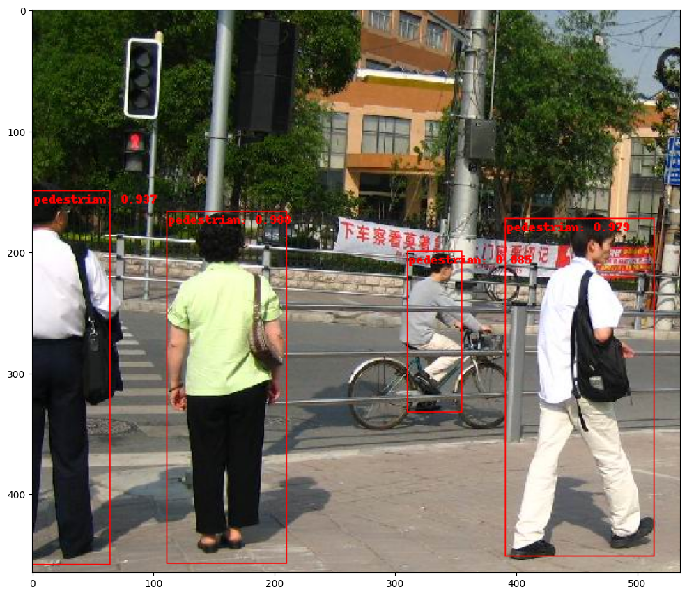

from functools import partial
from typing import Any, Callable, List, Optional, Type, Union
import torch
import torch.nn as nn
from torch import Tensor
from torchvision.models.resnet import conv1x1, conv3x3
from torch.ao.nn.quantized import FloatFunctional
class BottleneckFloatFunctional(nn.Module):
# Bottleneck in torchvision places the stride for downsampling at 3x3 convolution(self.conv2)
# while original implementation places the stride at the first 1x1 convolution(self.conv1)
# according to "Deep residual learning for image recognition" https://arxiv.org/abs/1512.03385.
# This variant is also known as ResNet V1.5 and improves accuracy according to
# https://ngc.nvidia.com/catalog/model-scripts/nvidia:resnet_50_v1_5_for_pytorch.
expansion: int = 4
def __init__(
self,
inplanes: int,
planes: int,
stride: int = 1,
downsample: Optional[nn.Module] = None,
groups: int = 1,
base_width: int = 64,
dilation: int = 1,
norm_layer: Optional[Callable[..., nn.Module]] = None,
) -> None:
super().__init__()
if norm_layer is None:
norm_layer = nn.BatchNorm2d
width = int(planes * (base_width / 64.0)) * groups
# Both self.conv2 and self.downsample layers downsample the input when stride != 1
self.conv1 = conv1x1(inplanes, width)
self.bn1 = norm_layer(width)
self.relu1 = nn.ReLU(inplace=True)
self.conv2 = conv3x3(width, width, stride, groups, dilation)
self.bn2 = norm_layer(width)
self.relu2 = nn.ReLU(inplace=True)
self.conv3 = conv1x1(width, planes * self.expansion)
self.bn3 = norm_layer(planes * self.expansion)
self.relu3 = nn.ReLU(inplace=True)
self.downsample = downsample
self.stride = stride
self.f_add = nn.quantized.FloatFunctional()
def forward(self, x: Tensor) -> Tensor:
identity = x
out = self.conv1(x)
out = self.bn1(out)
out = self.relu1(out)
out = self.conv2(out)
out = self.bn2(out)
out = self.relu2(out)
out = self.conv3(out)
out = self.bn3(out)
if self.downsample is not None:
identity = self.downsample(x)
out = self.f_add.add(out, identity)
out = self.relu3(out)
return outAt the time of writing this, quantization in PyTorch was relatively new to me. After reading about the advantages of quantization aware training, I wanted a deep dive on eager mode quantization and for something non-trivial. In my research I came across multiple discussions online requesting either help or a tutorial for quantizing the backbone of an object detection model (faster R-CNN in this case). As far as I could tell there was nothing out there and it got me wondering. Are there no tutorials because it’s too difficult or maybe not worth it? Surely there is some advantage with respect to memory requirements or latency (although maybe not better than GPU). In any case, this was the perfect excuse for a deep dive.
It’s worth mentioning that I ran into all sorts of issues on my early attempts. This post is polished and makes the whole process look linear but it really wasn’t. There were many attempts, breaks to research bugs, figuring out how to do a thing, reverting to simpler models, etc. I failed and failed, then finally began to understand things, and only then did it work.
Network Modifications
The first step in setting up the network for quantization is to create a modified bottleneck block. This isn’t obvious until you try to quantize the ResNet without it. You will get an error .. out += identity .. Could not run 'aten::add.out' .. which means that PyTorch isn’t able to quantize the skip connection using the += operator in eager mode. This discussion on the pytorch forums was helpful for describing the error as well as how to fix it. The modified bottleneck block just uses FloatFunctional which has a quantized addition operator. I’m using ResNet 101 here but for much smaller networks you would want to modify the basic block. Also, the original bottleneck class reuses the ReLU layer which won’t work when fusing. Finding this blog post about quantizing ResNet was helpful for realizing and avoiding that pitfall.
Now we can simply plug in that class to generate the ResNet. Even though the float functional operator was added, we can still load pretrained imagenet weights since the weights/submodules didn’t change. Note that the number of classes for the ResNet don’t matter here because we will extract intermediate layers and not the final fully connected layer (more on that ahead).
from torchvision.models.resnet import ResNet, ResNet50_Weights, ResNet101_Weights
def resnet101_ff():
return ResNet(block=BottleneckFloatFunctional, layers=[3, 4, 23, 3])
res101_backbone_ff = resnet101_ff()
res101_backbone_ff.load_state_dict(ResNet101_Weights.DEFAULT.get_state_dict(progress=True))<All keys matched successfully>I’m assuming some familiarity with the R-CNN architecture but to refresh, the feature pyramid network uses output from consecutive layers of the ResNet backbone to extract semantically rich information at different resolutions. Torchvision has a convenience class for the FPN that takes as input an OrderedDict containing the output of backbone layers (no final fully connected layer).
To get the layer outputs from the backbone, we can use a utility class IntermediateLayerGetter (type nn.ModuleDict) that returns an OrderedDict of layer outputs given the layer names. There is also a convenience class BackboneWithFPN which uses the intermediate layer getter but creating the FPN that way doesn’t allow the backbone to be quantized.
As an aside, it looks like the control flow (for loop) in IntermediateLayerGetter is one reason that the network is not symbolically traceable and why graph FX mode quantization can’t be used here.
from torchvision.models._utils import IntermediateLayerGetter
returned_layers = [1, 2, 3, 4] # get all 4 layers
return_layers = {f"layer{k}": str(v) for v, k in enumerate(returned_layers)} # {'layer1': 0, 'layer2': 1, ...}
res101_backbone_layers = IntermediateLayerGetter(res101_backbone_ff, return_layers=return_layers)Here’s an example of what the intermediate output looks like for a toy image.
out = res101_backbone_layers(torch.rand(1, 3, 200, 200)) # e.g. 200 x 200 image with 3 channels
[(k, v.shape) for k, v in out.items()][('0', torch.Size([1, 256, 50, 50])),
('1', torch.Size([1, 512, 25, 25])),
('2', torch.Size([1, 1024, 13, 13])),
('3', torch.Size([1, 2048, 7, 7]))]Wrapping the module dict backbone in sequential layer with quant/dequant stubs causes issues downstream when quantizing, so we need to create an nn.Module wrapper class manually.
from typing import Callable, Dict, List, Optional, Union
from torchvision.ops.feature_pyramid_network import ExtraFPNBlock, FeaturePyramidNetwork, LastLevelMaxPool
class QuantLayers(torch.nn.Module):
def __init__(self, layers_module_dict: torch.nn.ModuleDict):
super().__init__()
self.quant = torch.ao.quantization.QuantStub()
self.dequant = torch.ao.quantization.DeQuantStub()
self.layers = layers_module_dict
def forward(self, x):
x = self.quant(x)
out = self.layers(x)
for k, v in out.items():
out[k] = self.dequant(v)
return outNext step is to create a modified backbone with FPN. This follows the BackboneWithFPN class but just uses the wrapped module dict above with quantized inputs and dequantized outputs so they can be fed to the FPN. The feature pyramid network also needs to know the exact dimensions of each output from the resnet backbone so we’ll get that below.
class QuantBackboneWithFPN(nn.Module):
def __init__(
self,
backbone: nn.Module,
return_layers: Dict[str, str],
in_channels_list: List[int],
out_channels: int,
extra_blocks: Optional[ExtraFPNBlock] = None,
norm_layer: Optional[Callable[..., nn.Module]] = None,
) -> None:
super().__init__()
if extra_blocks is None:
extra_blocks = LastLevelMaxPool()
self.body = QuantLayers(
IntermediateLayerGetter(backbone, return_layers=return_layers)
)
self.fpn = FeaturePyramidNetwork(
in_channels_list=in_channels_list,
out_channels=out_channels,
extra_blocks=extra_blocks,
norm_layer=norm_layer,
)
self.out_channels = out_channels
def forward(self, x: Tensor) -> Dict[str, Tensor]:
x = self.body(x)
x = self.fpn(x)
return x# there are several ways to get these dimensions
# from backbone_utils.py: https://github.com/pytorch/vision/blob/main/torchvision/models/detection/backbone_utils.py#L145
# in_channels_stage2 = res101_backbone_layers.inplanes // 8
# in_channels_list = [in_channels_stage2 * 2 ** (i - 1) for i in returned_layers]
in_channels_list = []
for k1, m1 in res101_backbone_layers.named_children():
if 'layer' in k1:
in_channels_list.append((m1[-1].bn3.num_features))
in_channels_list[256, 512, 1024, 2048]Another important note is that regular BatchNorm2d is used here instead of FrozenBatchNorm2d because the latter isn’t quantizeable. Frozen batch norm is the recommended layer because batches are generally too small for good estimates of mean and variance statistics. So using regular batch norm could be unstable and less performant if those layers aren’t frozen.
res101_bb_fpn = QuantBackboneWithFPN(
backbone=res101_backbone_layers,
return_layers=return_layers,
in_channels_list=in_channels_list,
out_channels=256, # defined
extra_blocks=None, # defaults to LastLevelMaxPool, see above
norm_layer=None, # defaults to torch.nn.BatchNorm2d, see FeaturePyramidNetwork
)
# res101_bb_fpnAt this point there should be quant/dequant stubs in the network similar to below.
QuantBackboneWithFPN(
(body): QuantLayers(
(quant): QuantStub()
(dequant): DeQuantStub()
(layers): IntermediateLayerGetter(
(conv1): Conv2d(3, 64, kernel_size=(7, 7), stride=(2, 2), padding=(3, 3), bias=False)
(bn1): BatchNorm2d(64, eps=1e-05, momentum=0.1, affine=True, track_running_stats=True)
...Once the backbone with FPN is created, it can be plugged into the FasterRCNN torchvision class. The number of classes is set to 2 for object or background (specific to the dataset used here).
from torchvision.models.detection.faster_rcnn import FasterRCNN
quant_rcnn_res101 = FasterRCNN(res101_bb_fpn, num_classes=2)
# quant_rcnn_res101Layer Fusion and Quantization Config
Before training and subsequently converting the model, we can fuse specific sequences of modules in the backbone. Fusing compresses the model making it smaller and run faster. Below sequences of Conv2d-BatchNorm2d-ReLU and Conv2d-BatchNorm2d are fused. After fusing you should see new fused modules in the network (shown below) like ConvReLU2d as well as Identity.
(backbone): QuantBackboneWithFPN(
(body): QuantLayers(
(quant): QuantStub()
(dequant): DeQuantStub()
(layers): IntermediateLayerGetter(
(conv1): ConvReLU2d(
(0): Conv2d(3, 64, kernel_size=(7, 7), stride=(2, 2), padding=(3, 3))
(1): ReLU(inplace=True)
)
(bn1): Identity()
(relu): Identity()
(maxpool): MaxPool2d(kernel_size=3, stride=2, padding=1, dilation=1, ceil_mode=False)
(layer1): Sequential(
(0): BottleneckFloatFunctional(
(conv1): ConvReLU2d(
(0): Conv2d(64, 64, kernel_size=(1, 1), stride=(1, 1))
(1): ReLU(inplace=True)
)
(bn1): Identity()
(relu1): Identity()
...from torch.ao.quantization import fuse_modules
quant_rcnn_res101.eval()
# fuse stem
fuse_modules(quant_rcnn_res101.backbone.body.layers, [['conv1', 'bn1', 'relu']], inplace=True)
# fuse blocks
for k1, m1 in quant_rcnn_res101.backbone.body.layers.named_children():
if "layer" in k1: # in sequential layer with blocks
for k2, m2 in m1.named_children():
fuse_modules(m2, [["conv1", "bn1", "relu1"], ["conv2", "bn2", "relu2"], ["conv3", "bn3"]], inplace=True)
for k3, m3 in m2.named_children():
if "downsample" in k3: # fuse downsample
fuse_modules(m3, [["0", "1"]], inplace=True)Before training the qconfig needs to be set but on the resnet backbone only. And again, because the batches are so small, batch norm gets frozen using the handy API found in this PyTorch tutorial. Last, I’ll freeze the stem and the first layer in the backbone since the pretrained imagenet weights were loaded. After preparation you should be able to see the observers in the network.
(backbone): QuantBackboneWithFPN(
(body): QuantLayers(
(quant): QuantStub(
(activation_post_process): FusedMovingAvgObsFakeQuantize(
fake_quant_enabled=tensor([1]), observer_enabled=tensor([1]), scale=tensor([1.]), zero_point=tensor([0], dtype=torch.int32), dtype=torch.quint8, quant_min=0, quant_max=127, qscheme=torch.per_tensor_affine, reduce_range=True
(activation_post_process): MovingAverageMinMaxObserver(min_val=inf, max_val=-inf)
)
)
(dequant): DeQuantStub()
(layers): IntermediateLayerGetter(
(conv1): ConvReLU2d(
3, 64, kernel_size=(7, 7), stride=(2, 2), padding=(3, 3)
(weight_fake_quant): FusedMovingAvgObsFakeQuantize(
fake_quant_enabled=tensor([1]), observer_enabled=tensor([1]), scale=tensor([1.]), zero_point=tensor([0], dtype=torch.int32), dtype=torch.qint8, quant_min=-128, quant_max=127, qscheme=torch.per_channel_symmetric, reduce_range=False
(activation_post_process): MovingAveragePerChannelMinMaxObserver(min_val=tensor([]), max_val=tensor([]))
)
(activation_post_process): FusedMovingAvgObsFakeQuantize(
fake_quant_enabled=tensor([1]), observer_enabled=tensor([1]), scale=tensor([1.]), zero_point=tensor([0], dtype=torch.int32), dtype=torch.quint8, quant_min=0, quant_max=127, qscheme=torch.per_tensor_affine, reduce_range=True
(activation_post_process): MovingAverageMinMaxObserver(min_val=inf, max_val=-inf)
)
)
(bn1): Identity()
(relu): Identity()
...import re
# for backend in torch.backends.quantized.supported_engines:
# print(backend)
quant_rcnn_res101.train()
quant_rcnn_res101.backbone.body.qconfig = torch.ao.quantization.get_default_qat_qconfig('fbgemm')
quant_rcnn_res101_prepared = torch.ao.quantization.prepare_qat(quant_rcnn_res101, inplace=False)
quant_rcnn_res101_prepared = quant_rcnn_res101_prepared.apply(torch.nn.intrinsic.qat.freeze_bn_stats)
quant_rcnn_res101_prepared.backbone.body.layers.conv1.weight.requires_grad = False
for name, parameter in quant_rcnn_res101_prepared.backbone.body.named_parameters():
if re.search(r".layer1", name):
parameter.requires_grad = FalseDataset, Training, and Conversion
I’ll be using the PennFudan dataset from the Torchvision object detection finetuning tutorial for QAT. Most of the code below is borrowed from that tutorial with slight modifications since I don’t perform segmentation.
import os
import torch
from torchvision.io import read_image
from torchvision.ops.boxes import masks_to_boxes
from torchvision import tv_tensors
from torchvision.transforms.v2 import functional as F
from torchvision.transforms import v2 as T
class PennFudanDataset(torch.utils.data.Dataset):
def __init__(self, root, transforms):
self.root = root
self.transforms = transforms
# load all image files, sorting them to
# ensure that they are aligned
self.imgs = list(sorted(os.listdir(os.path.join(root, "PNGImages"))))
self.masks = list(sorted(os.listdir(os.path.join(root, "PedMasks"))))
def __getitem__(self, idx):
# load images and masks
img_path = os.path.join(self.root, "PNGImages", self.imgs[idx])
mask_path = os.path.join(self.root, "PedMasks", self.masks[idx])
img = read_image(img_path)
mask = read_image(mask_path)
# instances are encoded as different colors
obj_ids = torch.unique(mask)
# first id is the background, so remove it
obj_ids = obj_ids[1:]
num_objs = len(obj_ids)
# split the color-encoded mask into a set
# of binary masks
masks = (mask == obj_ids[:, None, None]).to(dtype=torch.uint8)
# get bounding box coordinates for each mask
boxes = masks_to_boxes(masks)
# there is only one class
labels = torch.ones((num_objs,), dtype=torch.int64)
image_id = idx
area = (boxes[:, 3] - boxes[:, 1]) * (boxes[:, 2] - boxes[:, 0])
# suppose all instances are not crowd
iscrowd = torch.zeros((num_objs,), dtype=torch.int64)
# Wrap sample and targets into torchvision tv_tensors:
img = tv_tensors.Image(img)
target = {}
target["boxes"] = tv_tensors.BoundingBoxes(boxes, format="XYXY", canvas_size=F.get_size(img))
target["masks"] = tv_tensors.Mask(masks)
target["labels"] = labels
target["image_id"] = image_id
target["area"] = area
target["iscrowd"] = iscrowd
if self.transforms is not None:
img, target = self.transforms(img, target)
return img, target
def __len__(self):
return len(self.imgs)
def get_transform(train):
transforms = []
if train:
transforms.append(T.RandomHorizontalFlip(0.5))
transforms.append(T.ToDtype(torch.float, scale=True))
transforms.append(T.ToPureTensor())
return T.Compose(transforms)%%capture
os.system("wget https://raw.githubusercontent.com/pytorch/vision/main/references/detection/engine.py")
os.system("wget https://raw.githubusercontent.com/pytorch/vision/main/references/detection/utils.py")
os.system("wget https://raw.githubusercontent.com/pytorch/vision/main/references/detection/coco_utils.py")
os.system("wget https://raw.githubusercontent.com/pytorch/vision/main/references/detection/coco_eval.py")
os.system("wget https://raw.githubusercontent.com/pytorch/vision/main/references/detection/transforms.py")
!wget https://www.cis.upenn.edu/~jshi/ped_html/PennFudanPed.zip
!unzip PennFudanPed.zip -d ./import utils
from engine import train_one_epoch, evaluate
# train on the GPU or on the CPU, if a GPU is not available
device = torch.device('cuda') if torch.cuda.is_available() else torch.device('cpu')
# our dataset has two classes only - background and person
num_classes = 2
# use our dataset and defined transformations
dataset = PennFudanDataset('PennFudanPed', get_transform(train=True))
dataset_test = PennFudanDataset('PennFudanPed', get_transform(train=False))
# split the dataset in train and test set
indices = torch.randperm(len(dataset)).tolist()
dataset = torch.utils.data.Subset(dataset, indices[:-50])
dataset_test = torch.utils.data.Subset(dataset_test, indices[-50:])
# define training and validation data loaders
data_loader = torch.utils.data.DataLoader(
dataset,
batch_size=2,
shuffle=True,
num_workers=1,
collate_fn=utils.collate_fn
)
data_loader_test = torch.utils.data.DataLoader(
dataset_test,
batch_size=1,
shuffle=False,
num_workers=1,
collate_fn=utils.collate_fn
)# move model to the right device
quant_rcnn_res101_prepared.to(device)
# construct an optimizer
params = [p for p in quant_rcnn_res101_prepared.parameters() if p.requires_grad]
optimizer = torch.optim.SGD(
params,
lr=0.005,
momentum=0.9,
weight_decay=0.0005
)
# and a learning rate scheduler
lr_scheduler = torch.optim.lr_scheduler.StepLR(
optimizer,
step_size=3,
gamma=0.1
)
# let's train it for 10 epochs
num_epochs = 10
for epoch in range(num_epochs):
# train for one epoch, printing every 10 iterations
train_one_epoch(quant_rcnn_res101_prepared, optimizer, data_loader, device, epoch, print_freq=10)
# update the learning rate
lr_scheduler.step()
# evaluate on the test dataset
evaluate(quant_rcnn_res101_prepared, data_loader_test, device=device)Epoch: [0] [ 0/60] eta: 0:01:05 lr: 0.000090 loss: 1.6602 (1.6602) loss_classifier: 0.9224 (0.9224) loss_box_reg: 0.0023 (0.0023) loss_objectness: 0.7214 (0.7214) loss_rpn_box_reg: 0.0140 (0.0140) time: 1.0922 data: 0.2625 max mem: 9188
Epoch: [0] [10/60] eta: 0:00:40 lr: 0.000936 loss: 0.7143 (0.9616) loss_classifier: 0.0847 (0.3113) loss_box_reg: 0.0019 (0.0041) loss_objectness: 0.6638 (0.6250) loss_rpn_box_reg: 0.0206 (0.0212) time: 0.8087 data: 0.0288 max mem: 9188
Epoch: [0] [20/60] eta: 0:00:31 lr: 0.001783 loss: 0.5990 (0.7357) loss_classifier: 0.1087 (0.2302) loss_box_reg: 0.0221 (0.0527) loss_objectness: 0.3577 (0.4293) loss_rpn_box_reg: 0.0206 (0.0235) time: 0.7719 data: 0.0054 max mem: 9188
Epoch: [0] [30/60] eta: 0:00:23 lr: 0.002629 loss: 0.3487 (0.5963) loss_classifier: 0.1135 (0.1929) loss_box_reg: 0.0837 (0.0640) loss_objectness: 0.0951 (0.3145) loss_rpn_box_reg: 0.0212 (0.0250) time: 0.7637 data: 0.0054 max mem: 9188
Epoch: [0] [40/60] eta: 0:00:15 lr: 0.003476 loss: 0.3345 (0.5256) loss_classifier: 0.1140 (0.1790) loss_box_reg: 0.0874 (0.0739) loss_objectness: 0.0602 (0.2496) loss_rpn_box_reg: 0.0201 (0.0230) time: 0.7614 data: 0.0054 max mem: 9188
Epoch: [0] [50/60] eta: 0:00:07 lr: 0.004323 loss: 0.2655 (0.4923) loss_classifier: 0.1164 (0.1727) loss_box_reg: 0.0991 (0.0861) loss_objectness: 0.0439 (0.2110) loss_rpn_box_reg: 0.0160 (0.0226) time: 0.7539 data: 0.0054 max mem: 9188
Epoch: [0] [59/60] eta: 0:00:00 lr: 0.005000 loss: 0.2582 (0.4716) loss_classifier: 0.1061 (0.1660) loss_box_reg: 0.1086 (0.0956) loss_objectness: 0.0400 (0.1876) loss_rpn_box_reg: 0.0109 (0.0223) time: 0.7506 data: 0.0055 max mem: 9188
Epoch: [0] Total time: 0:00:46 (0.7705 s / it)
creating index...
index created!
Test: [ 0/50] eta: 0:00:26 model_time: 0.2997 (0.2997) evaluator_time: 0.0087 (0.0087) time: 0.5225 data: 0.2121 max mem: 9188
Test: [49/50] eta: 0:00:00 model_time: 0.2671 (0.2676) evaluator_time: 0.0043 (0.0045) time: 0.2761 data: 0.0031 max mem: 9188
Test: Total time: 0:00:14 (0.2843 s / it)
Averaged stats: model_time: 0.2671 (0.2676) evaluator_time: 0.0043 (0.0045)
Accumulating evaluation results...
DONE (t=0.04s).
IoU metric: bbox
Average Precision (AP) @[ IoU=0.50:0.95 | area= all | maxDets=100 ] = 0.021
Average Precision (AP) @[ IoU=0.50 | area= all | maxDets=100 ] = 0.089
Average Precision (AP) @[ IoU=0.75 | area= all | maxDets=100 ] = 0.002
Average Precision (AP) @[ IoU=0.50:0.95 | area= small | maxDets=100 ] = 0.000
Average Precision (AP) @[ IoU=0.50:0.95 | area=medium | maxDets=100 ] = 0.000
Average Precision (AP) @[ IoU=0.50:0.95 | area= large | maxDets=100 ] = 0.022
Average Recall (AR) @[ IoU=0.50:0.95 | area= all | maxDets= 1 ] = 0.002
Average Recall (AR) @[ IoU=0.50:0.95 | area= all | maxDets= 10 ] = 0.077
Average Recall (AR) @[ IoU=0.50:0.95 | area= all | maxDets=100 ] = 0.303
Average Recall (AR) @[ IoU=0.50:0.95 | area= small | maxDets=100 ] = 0.000
Average Recall (AR) @[ IoU=0.50:0.95 | area=medium | maxDets=100 ] = 0.000
Average Recall (AR) @[ IoU=0.50:0.95 | area= large | maxDets=100 ] = 0.325
Epoch: [1] [ 0/60] eta: 0:01:00 lr: 0.005000 loss: 0.2305 (0.2305) loss_classifier: 0.0670 (0.0670) loss_box_reg: 0.1148 (0.1148) loss_objectness: 0.0354 (0.0354) loss_rpn_box_reg: 0.0133 (0.0133) time: 1.0080 data: 0.2090 max mem: 9188
Epoch: [1] [10/60] eta: 0:00:38 lr: 0.005000 loss: 0.3300 (0.3228) loss_classifier: 0.1011 (0.1051) loss_box_reg: 0.1396 (0.1461) loss_objectness: 0.0468 (0.0494) loss_rpn_box_reg: 0.0231 (0.0222) time: 0.7770 data: 0.0242 max mem: 9188
Epoch: [1] [20/60] eta: 0:00:30 lr: 0.005000 loss: 0.2922 (0.2905) loss_classifier: 0.0966 (0.0966) loss_box_reg: 0.1377 (0.1319) loss_objectness: 0.0367 (0.0438) loss_rpn_box_reg: 0.0156 (0.0183) time: 0.7568 data: 0.0057 max mem: 9188
Epoch: [1] [30/60] eta: 0:00:23 lr: 0.005000 loss: 0.2693 (0.2873) loss_classifier: 0.0876 (0.0962) loss_box_reg: 0.1191 (0.1302) loss_objectness: 0.0337 (0.0430) loss_rpn_box_reg: 0.0101 (0.0179) time: 0.7612 data: 0.0057 max mem: 9188
Epoch: [1] [40/60] eta: 0:00:15 lr: 0.005000 loss: 0.2052 (0.2968) loss_classifier: 0.0669 (0.1035) loss_box_reg: 0.1018 (0.1287) loss_objectness: 0.0299 (0.0464) loss_rpn_box_reg: 0.0101 (0.0182) time: 0.7637 data: 0.0057 max mem: 9188
Epoch: [1] [50/60] eta: 0:00:07 lr: 0.005000 loss: 0.1873 (0.2863) loss_classifier: 0.0641 (0.0982) loss_box_reg: 0.0945 (0.1282) loss_objectness: 0.0212 (0.0416) loss_rpn_box_reg: 0.0164 (0.0183) time: 0.7661 data: 0.0057 max mem: 9188
Epoch: [1] [59/60] eta: 0:00:00 lr: 0.005000 loss: 0.2432 (0.2833) loss_classifier: 0.0731 (0.0959) loss_box_reg: 0.1244 (0.1310) loss_objectness: 0.0187 (0.0376) loss_rpn_box_reg: 0.0170 (0.0188) time: 0.7676 data: 0.0057 max mem: 9188
Epoch: [1] Total time: 0:00:46 (0.7698 s / it)
creating index...
index created!
Test: [ 0/50] eta: 0:00:24 model_time: 0.2893 (0.2893) evaluator_time: 0.0060 (0.0060) time: 0.4938 data: 0.1962 max mem: 9188
Test: [49/50] eta: 0:00:00 model_time: 0.2744 (0.2684) evaluator_time: 0.0021 (0.0024) time: 0.2816 data: 0.0031 max mem: 9188
Test: Total time: 0:00:14 (0.2826 s / it)
Averaged stats: model_time: 0.2744 (0.2684) evaluator_time: 0.0021 (0.0024)
Accumulating evaluation results...
DONE (t=0.02s).
IoU metric: bbox
Average Precision (AP) @[ IoU=0.50:0.95 | area= all | maxDets=100 ] = 0.208
Average Precision (AP) @[ IoU=0.50 | area= all | maxDets=100 ] = 0.696
Average Precision (AP) @[ IoU=0.75 | area= all | maxDets=100 ] = 0.040
Average Precision (AP) @[ IoU=0.50:0.95 | area= small | maxDets=100 ] = 0.000
Average Precision (AP) @[ IoU=0.50:0.95 | area=medium | maxDets=100 ] = 0.113
Average Precision (AP) @[ IoU=0.50:0.95 | area= large | maxDets=100 ] = 0.219
Average Recall (AR) @[ IoU=0.50:0.95 | area= all | maxDets= 1 ] = 0.131
Average Recall (AR) @[ IoU=0.50:0.95 | area= all | maxDets= 10 ] = 0.389
Average Recall (AR) @[ IoU=0.50:0.95 | area= all | maxDets=100 ] = 0.408
Average Recall (AR) @[ IoU=0.50:0.95 | area= small | maxDets=100 ] = 0.000
Average Recall (AR) @[ IoU=0.50:0.95 | area=medium | maxDets=100 ] = 0.360
Average Recall (AR) @[ IoU=0.50:0.95 | area= large | maxDets=100 ] = 0.421
Epoch: [2] [ 0/60] eta: 0:01:02 lr: 0.005000 loss: 0.1664 (0.1664) loss_classifier: 0.0622 (0.0622) loss_box_reg: 0.0806 (0.0806) loss_objectness: 0.0133 (0.0133) loss_rpn_box_reg: 0.0103 (0.0103) time: 1.0334 data: 0.2054 max mem: 9188
Epoch: [2] [10/60] eta: 0:00:40 lr: 0.005000 loss: 0.1824 (0.2101) loss_classifier: 0.0578 (0.0609) loss_box_reg: 0.1048 (0.1166) loss_objectness: 0.0102 (0.0110) loss_rpn_box_reg: 0.0180 (0.0216) time: 0.8014 data: 0.0237 max mem: 9188
Epoch: [2] [20/60] eta: 0:00:31 lr: 0.005000 loss: 0.1885 (0.2088) loss_classifier: 0.0615 (0.0680) loss_box_reg: 0.1048 (0.1126) loss_objectness: 0.0076 (0.0093) loss_rpn_box_reg: 0.0180 (0.0190) time: 0.7785 data: 0.0057 max mem: 9188
Epoch: [2] [30/60] eta: 0:00:23 lr: 0.005000 loss: 0.1895 (0.2282) loss_classifier: 0.0627 (0.0734) loss_box_reg: 0.1084 (0.1228) loss_objectness: 0.0067 (0.0110) loss_rpn_box_reg: 0.0160 (0.0211) time: 0.7754 data: 0.0058 max mem: 9188
Epoch: [2] [40/60] eta: 0:00:15 lr: 0.005000 loss: 0.2135 (0.2191) loss_classifier: 0.0580 (0.0679) loss_box_reg: 0.1133 (0.1171) loss_objectness: 0.0069 (0.0131) loss_rpn_box_reg: 0.0182 (0.0210) time: 0.7747 data: 0.0058 max mem: 9188
Epoch: [2] [50/60] eta: 0:00:07 lr: 0.005000 loss: 0.1913 (0.2131) loss_classifier: 0.0502 (0.0647) loss_box_reg: 0.1150 (0.1163) loss_objectness: 0.0074 (0.0126) loss_rpn_box_reg: 0.0145 (0.0195) time: 0.7779 data: 0.0066 max mem: 9188
Epoch: [2] [59/60] eta: 0:00:00 lr: 0.005000 loss: 0.2049 (0.2168) loss_classifier: 0.0544 (0.0649) loss_box_reg: 0.1379 (0.1196) loss_objectness: 0.0077 (0.0120) loss_rpn_box_reg: 0.0157 (0.0202) time: 0.7743 data: 0.0071 max mem: 9188
Epoch: [2] Total time: 0:00:46 (0.7830 s / it)
creating index...
index created!
Test: [ 0/50] eta: 0:00:26 model_time: 0.3114 (0.3114) evaluator_time: 0.0047 (0.0047) time: 0.5266 data: 0.2082 max mem: 9188
Test: [49/50] eta: 0:00:00 model_time: 0.2667 (0.2690) evaluator_time: 0.0020 (0.0022) time: 0.2730 data: 0.0034 max mem: 9188
Test: Total time: 0:00:14 (0.2832 s / it)
Averaged stats: model_time: 0.2667 (0.2690) evaluator_time: 0.0020 (0.0022)
Accumulating evaluation results...
DONE (t=0.03s).
IoU metric: bbox
Average Precision (AP) @[ IoU=0.50:0.95 | area= all | maxDets=100 ] = 0.426
Average Precision (AP) @[ IoU=0.50 | area= all | maxDets=100 ] = 0.941
Average Precision (AP) @[ IoU=0.75 | area= all | maxDets=100 ] = 0.275
Average Precision (AP) @[ IoU=0.50:0.95 | area= small | maxDets=100 ] = 0.003
Average Precision (AP) @[ IoU=0.50:0.95 | area=medium | maxDets=100 ] = 0.249
Average Precision (AP) @[ IoU=0.50:0.95 | area= large | maxDets=100 ] = 0.446
Average Recall (AR) @[ IoU=0.50:0.95 | area= all | maxDets= 1 ] = 0.216
Average Recall (AR) @[ IoU=0.50:0.95 | area= all | maxDets= 10 ] = 0.535
Average Recall (AR) @[ IoU=0.50:0.95 | area= all | maxDets=100 ] = 0.540
Average Recall (AR) @[ IoU=0.50:0.95 | area= small | maxDets=100 ] = 0.033
Average Recall (AR) @[ IoU=0.50:0.95 | area=medium | maxDets=100 ] = 0.380
Average Recall (AR) @[ IoU=0.50:0.95 | area= large | maxDets=100 ] = 0.561
Epoch: [3] [ 0/60] eta: 0:00:59 lr: 0.000500 loss: 0.1269 (0.1269) loss_classifier: 0.0302 (0.0302) loss_box_reg: 0.0771 (0.0771) loss_objectness: 0.0064 (0.0064) loss_rpn_box_reg: 0.0132 (0.0132) time: 0.9940 data: 0.2165 max mem: 9188
Epoch: [3] [10/60] eta: 0:00:40 lr: 0.000500 loss: 0.1716 (0.2328) loss_classifier: 0.0517 (0.0684) loss_box_reg: 0.1076 (0.1371) loss_objectness: 0.0037 (0.0082) loss_rpn_box_reg: 0.0132 (0.0190) time: 0.8007 data: 0.0249 max mem: 9188
Epoch: [3] [20/60] eta: 0:00:31 lr: 0.000500 loss: 0.1716 (0.2058) loss_classifier: 0.0479 (0.0585) loss_box_reg: 0.1076 (0.1229) loss_objectness: 0.0041 (0.0069) loss_rpn_box_reg: 0.0143 (0.0175) time: 0.7782 data: 0.0058 max mem: 9188
Epoch: [3] [30/60] eta: 0:00:23 lr: 0.000500 loss: 0.1613 (0.1940) loss_classifier: 0.0434 (0.0556) loss_box_reg: 0.1042 (0.1161) loss_objectness: 0.0051 (0.0067) loss_rpn_box_reg: 0.0131 (0.0157) time: 0.7731 data: 0.0059 max mem: 9188
Epoch: [3] [40/60] eta: 0:00:15 lr: 0.000500 loss: 0.1840 (0.1919) loss_classifier: 0.0563 (0.0555) loss_box_reg: 0.1063 (0.1140) loss_objectness: 0.0051 (0.0064) loss_rpn_box_reg: 0.0132 (0.0160) time: 0.7706 data: 0.0062 max mem: 9188
Epoch: [3] [50/60] eta: 0:00:07 lr: 0.000500 loss: 0.1402 (0.1820) loss_classifier: 0.0444 (0.0527) loss_box_reg: 0.0820 (0.1080) loss_objectness: 0.0044 (0.0060) loss_rpn_box_reg: 0.0132 (0.0153) time: 0.7652 data: 0.0061 max mem: 9188
Epoch: [3] [59/60] eta: 0:00:00 lr: 0.000500 loss: 0.1260 (0.1743) loss_classifier: 0.0367 (0.0501) loss_box_reg: 0.0732 (0.1045) loss_objectness: 0.0022 (0.0055) loss_rpn_box_reg: 0.0080 (0.0143) time: 0.7578 data: 0.0055 max mem: 9188
Epoch: [3] Total time: 0:00:46 (0.7759 s / it)
creating index...
index created!
Test: [ 0/50] eta: 0:00:26 model_time: 0.3235 (0.3235) evaluator_time: 0.0042 (0.0042) time: 0.5317 data: 0.2016 max mem: 9188
Test: [49/50] eta: 0:00:00 model_time: 0.2647 (0.2682) evaluator_time: 0.0016 (0.0018) time: 0.2752 data: 0.0030 max mem: 9188
Test: Total time: 0:00:14 (0.2819 s / it)
Averaged stats: model_time: 0.2647 (0.2682) evaluator_time: 0.0016 (0.0018)
Accumulating evaluation results...
DONE (t=0.02s).
IoU metric: bbox
Average Precision (AP) @[ IoU=0.50:0.95 | area= all | maxDets=100 ] = 0.501
Average Precision (AP) @[ IoU=0.50 | area= all | maxDets=100 ] = 0.938
Average Precision (AP) @[ IoU=0.75 | area= all | maxDets=100 ] = 0.453
Average Precision (AP) @[ IoU=0.50:0.95 | area= small | maxDets=100 ] = 0.005
Average Precision (AP) @[ IoU=0.50:0.95 | area=medium | maxDets=100 ] = 0.314
Average Precision (AP) @[ IoU=0.50:0.95 | area= large | maxDets=100 ] = 0.523
Average Recall (AR) @[ IoU=0.50:0.95 | area= all | maxDets= 1 ] = 0.245
Average Recall (AR) @[ IoU=0.50:0.95 | area= all | maxDets= 10 ] = 0.575
Average Recall (AR) @[ IoU=0.50:0.95 | area= all | maxDets=100 ] = 0.575
Average Recall (AR) @[ IoU=0.50:0.95 | area= small | maxDets=100 ] = 0.033
Average Recall (AR) @[ IoU=0.50:0.95 | area=medium | maxDets=100 ] = 0.380
Average Recall (AR) @[ IoU=0.50:0.95 | area= large | maxDets=100 ] = 0.599
Epoch: [4] [ 0/60] eta: 0:00:58 lr: 0.000500 loss: 0.1874 (0.1874) loss_classifier: 0.0379 (0.0379) loss_box_reg: 0.1311 (0.1311) loss_objectness: 0.0055 (0.0055) loss_rpn_box_reg: 0.0129 (0.0129) time: 0.9828 data: 0.2060 max mem: 9188
Epoch: [4] [10/60] eta: 0:00:39 lr: 0.000500 loss: 0.1874 (0.1985) loss_classifier: 0.0483 (0.0520) loss_box_reg: 0.1261 (0.1253) loss_objectness: 0.0042 (0.0041) loss_rpn_box_reg: 0.0143 (0.0171) time: 0.7883 data: 0.0238 max mem: 9188
Epoch: [4] [20/60] eta: 0:00:31 lr: 0.000500 loss: 0.1580 (0.1767) loss_classifier: 0.0424 (0.0474) loss_box_reg: 0.0927 (0.1102) loss_objectness: 0.0040 (0.0045) loss_rpn_box_reg: 0.0133 (0.0147) time: 0.7684 data: 0.0057 max mem: 9188
Epoch: [4] [30/60] eta: 0:00:23 lr: 0.000500 loss: 0.1519 (0.1718) loss_classifier: 0.0421 (0.0475) loss_box_reg: 0.0991 (0.1055) loss_objectness: 0.0038 (0.0048) loss_rpn_box_reg: 0.0093 (0.0140) time: 0.7741 data: 0.0059 max mem: 9188
Epoch: [4] [40/60] eta: 0:00:15 lr: 0.000500 loss: 0.1401 (0.1661) loss_classifier: 0.0371 (0.0455) loss_box_reg: 0.0776 (0.1031) loss_objectness: 0.0038 (0.0046) loss_rpn_box_reg: 0.0092 (0.0129) time: 0.7815 data: 0.0058 max mem: 9188
Epoch: [4] [50/60] eta: 0:00:07 lr: 0.000500 loss: 0.1408 (0.1695) loss_classifier: 0.0360 (0.0473) loss_box_reg: 0.0843 (0.1031) loss_objectness: 0.0038 (0.0054) loss_rpn_box_reg: 0.0112 (0.0136) time: 0.7709 data: 0.0057 max mem: 9188
Epoch: [4] [59/60] eta: 0:00:00 lr: 0.000500 loss: 0.1481 (0.1657) loss_classifier: 0.0366 (0.0461) loss_box_reg: 0.0888 (0.1014) loss_objectness: 0.0026 (0.0052) loss_rpn_box_reg: 0.0119 (0.0130) time: 0.7635 data: 0.0058 max mem: 9188
Epoch: [4] Total time: 0:00:46 (0.7779 s / it)
creating index...
index created!
Test: [ 0/50] eta: 0:00:25 model_time: 0.3073 (0.3073) evaluator_time: 0.0039 (0.0039) time: 0.5077 data: 0.1946 max mem: 9188
Test: [49/50] eta: 0:00:00 model_time: 0.2605 (0.2693) evaluator_time: 0.0016 (0.0019) time: 0.2714 data: 0.0030 max mem: 9188
Test: Total time: 0:00:14 (0.2829 s / it)
Averaged stats: model_time: 0.2605 (0.2693) evaluator_time: 0.0016 (0.0019)
Accumulating evaluation results...
DONE (t=0.02s).
IoU metric: bbox
Average Precision (AP) @[ IoU=0.50:0.95 | area= all | maxDets=100 ] = 0.481
Average Precision (AP) @[ IoU=0.50 | area= all | maxDets=100 ] = 0.939
Average Precision (AP) @[ IoU=0.75 | area= all | maxDets=100 ] = 0.367
Average Precision (AP) @[ IoU=0.50:0.95 | area= small | maxDets=100 ] = 0.017
Average Precision (AP) @[ IoU=0.50:0.95 | area=medium | maxDets=100 ] = 0.242
Average Precision (AP) @[ IoU=0.50:0.95 | area= large | maxDets=100 ] = 0.505
Average Recall (AR) @[ IoU=0.50:0.95 | area= all | maxDets= 1 ] = 0.242
Average Recall (AR) @[ IoU=0.50:0.95 | area= all | maxDets= 10 ] = 0.570
Average Recall (AR) @[ IoU=0.50:0.95 | area= all | maxDets=100 ] = 0.571
Average Recall (AR) @[ IoU=0.50:0.95 | area= small | maxDets=100 ] = 0.100
Average Recall (AR) @[ IoU=0.50:0.95 | area=medium | maxDets=100 ] = 0.320
Average Recall (AR) @[ IoU=0.50:0.95 | area= large | maxDets=100 ] = 0.595
Epoch: [5] [ 0/60] eta: 0:00:59 lr: 0.000500 loss: 0.1179 (0.1179) loss_classifier: 0.0285 (0.0285) loss_box_reg: 0.0738 (0.0738) loss_objectness: 0.0035 (0.0035) loss_rpn_box_reg: 0.0120 (0.0120) time: 0.9861 data: 0.2058 max mem: 9188
Epoch: [5] [10/60] eta: 0:00:39 lr: 0.000500 loss: 0.1691 (0.1664) loss_classifier: 0.0493 (0.0478) loss_box_reg: 0.1028 (0.1006) loss_objectness: 0.0039 (0.0043) loss_rpn_box_reg: 0.0109 (0.0137) time: 0.7915 data: 0.0246 max mem: 9188
Epoch: [5] [20/60] eta: 0:00:31 lr: 0.000500 loss: 0.1691 (0.1752) loss_classifier: 0.0499 (0.0500) loss_box_reg: 0.1028 (0.1053) loss_objectness: 0.0042 (0.0052) loss_rpn_box_reg: 0.0109 (0.0149) time: 0.7731 data: 0.0062 max mem: 9188
Epoch: [5] [30/60] eta: 0:00:23 lr: 0.000500 loss: 0.1550 (0.1697) loss_classifier: 0.0483 (0.0486) loss_box_reg: 0.0918 (0.1023) loss_objectness: 0.0046 (0.0052) loss_rpn_box_reg: 0.0104 (0.0136) time: 0.7696 data: 0.0057 max mem: 9188
Epoch: [5] [40/60] eta: 0:00:15 lr: 0.000500 loss: 0.1439 (0.1698) loss_classifier: 0.0439 (0.0489) loss_box_reg: 0.0912 (0.1030) loss_objectness: 0.0028 (0.0046) loss_rpn_box_reg: 0.0097 (0.0133) time: 0.7672 data: 0.0054 max mem: 9188
Epoch: [5] [50/60] eta: 0:00:07 lr: 0.000500 loss: 0.1373 (0.1627) loss_classifier: 0.0387 (0.0469) loss_box_reg: 0.0841 (0.0988) loss_objectness: 0.0029 (0.0045) loss_rpn_box_reg: 0.0078 (0.0125) time: 0.7658 data: 0.0054 max mem: 9188
Epoch: [5] [59/60] eta: 0:00:00 lr: 0.000500 loss: 0.1196 (0.1647) loss_classifier: 0.0331 (0.0475) loss_box_reg: 0.0802 (0.1003) loss_objectness: 0.0030 (0.0047) loss_rpn_box_reg: 0.0071 (0.0121) time: 0.7703 data: 0.0056 max mem: 9188
Epoch: [5] Total time: 0:00:46 (0.7769 s / it)
creating index...
index created!
Test: [ 0/50] eta: 0:00:25 model_time: 0.3016 (0.3016) evaluator_time: 0.0036 (0.0036) time: 0.5064 data: 0.1989 max mem: 9188
Test: [49/50] eta: 0:00:00 model_time: 0.2680 (0.2723) evaluator_time: 0.0015 (0.0018) time: 0.2758 data: 0.0029 max mem: 9188
Test: Total time: 0:00:14 (0.2859 s / it)
Averaged stats: model_time: 0.2680 (0.2723) evaluator_time: 0.0015 (0.0018)
Accumulating evaluation results...
DONE (t=0.02s).
IoU metric: bbox
Average Precision (AP) @[ IoU=0.50:0.95 | area= all | maxDets=100 ] = 0.517
Average Precision (AP) @[ IoU=0.50 | area= all | maxDets=100 ] = 0.964
Average Precision (AP) @[ IoU=0.75 | area= all | maxDets=100 ] = 0.484
Average Precision (AP) @[ IoU=0.50:0.95 | area= small | maxDets=100 ] = 0.006
Average Precision (AP) @[ IoU=0.50:0.95 | area=medium | maxDets=100 ] = 0.315
Average Precision (AP) @[ IoU=0.50:0.95 | area= large | maxDets=100 ] = 0.539
Average Recall (AR) @[ IoU=0.50:0.95 | area= all | maxDets= 1 ] = 0.256
Average Recall (AR) @[ IoU=0.50:0.95 | area= all | maxDets= 10 ] = 0.583
Average Recall (AR) @[ IoU=0.50:0.95 | area= all | maxDets=100 ] = 0.586
Average Recall (AR) @[ IoU=0.50:0.95 | area= small | maxDets=100 ] = 0.067
Average Recall (AR) @[ IoU=0.50:0.95 | area=medium | maxDets=100 ] = 0.420
Average Recall (AR) @[ IoU=0.50:0.95 | area= large | maxDets=100 ] = 0.608
Epoch: [6] [ 0/60] eta: 0:00:59 lr: 0.000050 loss: 0.1945 (0.1945) loss_classifier: 0.0693 (0.0693) loss_box_reg: 0.1114 (0.1114) loss_objectness: 0.0028 (0.0028) loss_rpn_box_reg: 0.0110 (0.0110) time: 0.9962 data: 0.2050 max mem: 9188
Epoch: [6] [10/60] eta: 0:00:39 lr: 0.000050 loss: 0.1817 (0.1884) loss_classifier: 0.0551 (0.0548) loss_box_reg: 0.1114 (0.1192) loss_objectness: 0.0029 (0.0025) loss_rpn_box_reg: 0.0103 (0.0117) time: 0.7963 data: 0.0238 max mem: 9188
Epoch: [6] [20/60] eta: 0:00:31 lr: 0.000050 loss: 0.1631 (0.1723) loss_classifier: 0.0446 (0.0494) loss_box_reg: 0.1005 (0.1094) loss_objectness: 0.0026 (0.0025) loss_rpn_box_reg: 0.0089 (0.0110) time: 0.7784 data: 0.0056 max mem: 9188
Epoch: [6] [30/60] eta: 0:00:23 lr: 0.000050 loss: 0.1194 (0.1552) loss_classifier: 0.0393 (0.0450) loss_box_reg: 0.0682 (0.0973) loss_objectness: 0.0021 (0.0027) loss_rpn_box_reg: 0.0071 (0.0102) time: 0.7767 data: 0.0055 max mem: 9188
Epoch: [6] [40/60] eta: 0:00:15 lr: 0.000050 loss: 0.1135 (0.1558) loss_classifier: 0.0380 (0.0451) loss_box_reg: 0.0677 (0.0974) loss_objectness: 0.0027 (0.0030) loss_rpn_box_reg: 0.0074 (0.0103) time: 0.7690 data: 0.0055 max mem: 9188
Epoch: [6] [50/60] eta: 0:00:07 lr: 0.000050 loss: 0.1423 (0.1599) loss_classifier: 0.0434 (0.0465) loss_box_reg: 0.0839 (0.0993) loss_objectness: 0.0035 (0.0035) loss_rpn_box_reg: 0.0110 (0.0106) time: 0.7677 data: 0.0057 max mem: 9188
Epoch: [6] [59/60] eta: 0:00:00 lr: 0.000050 loss: 0.1605 (0.1649) loss_classifier: 0.0487 (0.0483) loss_box_reg: 0.0996 (0.1019) loss_objectness: 0.0027 (0.0040) loss_rpn_box_reg: 0.0074 (0.0107) time: 0.7675 data: 0.0056 max mem: 9188
Epoch: [6] Total time: 0:00:46 (0.7791 s / it)
creating index...
index created!
Test: [ 0/50] eta: 0:00:25 model_time: 0.3030 (0.3030) evaluator_time: 0.0038 (0.0038) time: 0.5109 data: 0.2020 max mem: 9188
Test: [49/50] eta: 0:00:00 model_time: 0.2680 (0.2678) evaluator_time: 0.0015 (0.0018) time: 0.2732 data: 0.0031 max mem: 9188
Test: Total time: 0:00:14 (0.2814 s / it)
Averaged stats: model_time: 0.2680 (0.2678) evaluator_time: 0.0015 (0.0018)
Accumulating evaluation results...
DONE (t=0.02s).
IoU metric: bbox
Average Precision (AP) @[ IoU=0.50:0.95 | area= all | maxDets=100 ] = 0.521
Average Precision (AP) @[ IoU=0.50 | area= all | maxDets=100 ] = 0.948
Average Precision (AP) @[ IoU=0.75 | area= all | maxDets=100 ] = 0.470
Average Precision (AP) @[ IoU=0.50:0.95 | area= small | maxDets=100 ] = 0.014
Average Precision (AP) @[ IoU=0.50:0.95 | area=medium | maxDets=100 ] = 0.306
Average Precision (AP) @[ IoU=0.50:0.95 | area= large | maxDets=100 ] = 0.544
Average Recall (AR) @[ IoU=0.50:0.95 | area= all | maxDets= 1 ] = 0.269
Average Recall (AR) @[ IoU=0.50:0.95 | area= all | maxDets= 10 ] = 0.591
Average Recall (AR) @[ IoU=0.50:0.95 | area= all | maxDets=100 ] = 0.596
Average Recall (AR) @[ IoU=0.50:0.95 | area= small | maxDets=100 ] = 0.100
Average Recall (AR) @[ IoU=0.50:0.95 | area=medium | maxDets=100 ] = 0.420
Average Recall (AR) @[ IoU=0.50:0.95 | area= large | maxDets=100 ] = 0.617
Epoch: [7] [ 0/60] eta: 0:00:58 lr: 0.000050 loss: 0.0945 (0.0945) loss_classifier: 0.0253 (0.0253) loss_box_reg: 0.0563 (0.0563) loss_objectness: 0.0073 (0.0073) loss_rpn_box_reg: 0.0056 (0.0056) time: 0.9705 data: 0.1853 max mem: 9188
Epoch: [7] [10/60] eta: 0:00:39 lr: 0.000050 loss: 0.1117 (0.1174) loss_classifier: 0.0318 (0.0328) loss_box_reg: 0.0728 (0.0726) loss_objectness: 0.0033 (0.0046) loss_rpn_box_reg: 0.0056 (0.0075) time: 0.7892 data: 0.0219 max mem: 9188
Epoch: [7] [20/60] eta: 0:00:31 lr: 0.000050 loss: 0.1672 (0.1506) loss_classifier: 0.0427 (0.0432) loss_box_reg: 0.1006 (0.0924) loss_objectness: 0.0033 (0.0049) loss_rpn_box_reg: 0.0100 (0.0101) time: 0.7759 data: 0.0056 max mem: 9188
Epoch: [7] [30/60] eta: 0:00:23 lr: 0.000050 loss: 0.1998 (0.1628) loss_classifier: 0.0521 (0.0470) loss_box_reg: 0.1177 (0.1005) loss_objectness: 0.0039 (0.0048) loss_rpn_box_reg: 0.0111 (0.0105) time: 0.7782 data: 0.0055 max mem: 9188
Epoch: [7] [40/60] eta: 0:00:15 lr: 0.000050 loss: 0.1580 (0.1646) loss_classifier: 0.0507 (0.0471) loss_box_reg: 0.1028 (0.1019) loss_objectness: 0.0040 (0.0047) loss_rpn_box_reg: 0.0098 (0.0109) time: 0.7750 data: 0.0056 max mem: 9188
Epoch: [7] [50/60] eta: 0:00:07 lr: 0.000050 loss: 0.1286 (0.1654) loss_classifier: 0.0416 (0.0473) loss_box_reg: 0.0761 (0.1023) loss_objectness: 0.0022 (0.0050) loss_rpn_box_reg: 0.0091 (0.0108) time: 0.7680 data: 0.0062 max mem: 9188
Epoch: [7] [59/60] eta: 0:00:00 lr: 0.000050 loss: 0.1352 (0.1616) loss_classifier: 0.0416 (0.0464) loss_box_reg: 0.0761 (0.0996) loss_objectness: 0.0024 (0.0047) loss_rpn_box_reg: 0.0087 (0.0108) time: 0.7615 data: 0.0061 max mem: 9188
Epoch: [7] Total time: 0:00:46 (0.7777 s / it)
creating index...
index created!
Test: [ 0/50] eta: 0:00:25 model_time: 0.2944 (0.2944) evaluator_time: 0.0038 (0.0038) time: 0.5057 data: 0.2053 max mem: 9188
Test: [49/50] eta: 0:00:00 model_time: 0.2690 (0.2697) evaluator_time: 0.0015 (0.0017) time: 0.2784 data: 0.0030 max mem: 9188
Test: Total time: 0:00:14 (0.2834 s / it)
Averaged stats: model_time: 0.2690 (0.2697) evaluator_time: 0.0015 (0.0017)
Accumulating evaluation results...
DONE (t=0.02s).
IoU metric: bbox
Average Precision (AP) @[ IoU=0.50:0.95 | area= all | maxDets=100 ] = 0.511
Average Precision (AP) @[ IoU=0.50 | area= all | maxDets=100 ] = 0.960
Average Precision (AP) @[ IoU=0.75 | area= all | maxDets=100 ] = 0.464
Average Precision (AP) @[ IoU=0.50:0.95 | area= small | maxDets=100 ] = 0.020
Average Precision (AP) @[ IoU=0.50:0.95 | area=medium | maxDets=100 ] = 0.168
Average Precision (AP) @[ IoU=0.50:0.95 | area= large | maxDets=100 ] = 0.536
Average Recall (AR) @[ IoU=0.50:0.95 | area= all | maxDets= 1 ] = 0.267
Average Recall (AR) @[ IoU=0.50:0.95 | area= all | maxDets= 10 ] = 0.581
Average Recall (AR) @[ IoU=0.50:0.95 | area= all | maxDets=100 ] = 0.585
Average Recall (AR) @[ IoU=0.50:0.95 | area= small | maxDets=100 ] = 0.100
Average Recall (AR) @[ IoU=0.50:0.95 | area=medium | maxDets=100 ] = 0.360
Average Recall (AR) @[ IoU=0.50:0.95 | area= large | maxDets=100 ] = 0.608
Epoch: [8] [ 0/60] eta: 0:01:02 lr: 0.000050 loss: 0.1875 (0.1875) loss_classifier: 0.0613 (0.0613) loss_box_reg: 0.1094 (0.1094) loss_objectness: 0.0076 (0.0076) loss_rpn_box_reg: 0.0092 (0.0092) time: 1.0381 data: 0.2319 max mem: 9188
Epoch: [8] [10/60] eta: 0:00:39 lr: 0.000050 loss: 0.1625 (0.1392) loss_classifier: 0.0334 (0.0383) loss_box_reg: 0.1082 (0.0888) loss_objectness: 0.0020 (0.0028) loss_rpn_box_reg: 0.0103 (0.0093) time: 0.7846 data: 0.0262 max mem: 9188
Epoch: [8] [20/60] eta: 0:00:31 lr: 0.000050 loss: 0.1625 (0.1732) loss_classifier: 0.0377 (0.0486) loss_box_reg: 0.1059 (0.1091) loss_objectness: 0.0022 (0.0040) loss_rpn_box_reg: 0.0105 (0.0114) time: 0.7634 data: 0.0056 max mem: 9188
Epoch: [8] [30/60] eta: 0:00:23 lr: 0.000050 loss: 0.1233 (0.1589) loss_classifier: 0.0372 (0.0447) loss_box_reg: 0.0807 (0.0999) loss_objectness: 0.0024 (0.0035) loss_rpn_box_reg: 0.0093 (0.0107) time: 0.7660 data: 0.0055 max mem: 9188
Epoch: [8] [40/60] eta: 0:00:15 lr: 0.000050 loss: 0.1437 (0.1624) loss_classifier: 0.0351 (0.0458) loss_box_reg: 0.0866 (0.1019) loss_objectness: 0.0024 (0.0037) loss_rpn_box_reg: 0.0096 (0.0110) time: 0.7712 data: 0.0056 max mem: 9188
Epoch: [8] [50/60] eta: 0:00:07 lr: 0.000050 loss: 0.1505 (0.1609) loss_classifier: 0.0417 (0.0462) loss_box_reg: 0.1007 (0.1003) loss_objectness: 0.0022 (0.0037) loss_rpn_box_reg: 0.0095 (0.0108) time: 0.7742 data: 0.0058 max mem: 9188
Epoch: [8] [59/60] eta: 0:00:00 lr: 0.000050 loss: 0.1266 (0.1577) loss_classifier: 0.0403 (0.0455) loss_box_reg: 0.0737 (0.0980) loss_objectness: 0.0022 (0.0036) loss_rpn_box_reg: 0.0070 (0.0106) time: 0.7697 data: 0.0057 max mem: 9188
Epoch: [8] Total time: 0:00:46 (0.7761 s / it)
creating index...
index created!
Test: [ 0/50] eta: 0:00:24 model_time: 0.2885 (0.2885) evaluator_time: 0.0034 (0.0034) time: 0.4929 data: 0.1990 max mem: 9188
Test: [49/50] eta: 0:00:00 model_time: 0.2648 (0.2672) evaluator_time: 0.0016 (0.0017) time: 0.2731 data: 0.0031 max mem: 9188
Test: Total time: 0:00:14 (0.2808 s / it)
Averaged stats: model_time: 0.2648 (0.2672) evaluator_time: 0.0016 (0.0017)
Accumulating evaluation results...
DONE (t=0.02s).
IoU metric: bbox
Average Precision (AP) @[ IoU=0.50:0.95 | area= all | maxDets=100 ] = 0.529
Average Precision (AP) @[ IoU=0.50 | area= all | maxDets=100 ] = 0.962
Average Precision (AP) @[ IoU=0.75 | area= all | maxDets=100 ] = 0.499
Average Precision (AP) @[ IoU=0.50:0.95 | area= small | maxDets=100 ] = 0.004
Average Precision (AP) @[ IoU=0.50:0.95 | area=medium | maxDets=100 ] = 0.330
Average Precision (AP) @[ IoU=0.50:0.95 | area= large | maxDets=100 ] = 0.553
Average Recall (AR) @[ IoU=0.50:0.95 | area= all | maxDets= 1 ] = 0.264
Average Recall (AR) @[ IoU=0.50:0.95 | area= all | maxDets= 10 ] = 0.597
Average Recall (AR) @[ IoU=0.50:0.95 | area= all | maxDets=100 ] = 0.603
Average Recall (AR) @[ IoU=0.50:0.95 | area= small | maxDets=100 ] = 0.067
Average Recall (AR) @[ IoU=0.50:0.95 | area=medium | maxDets=100 ] = 0.480
Average Recall (AR) @[ IoU=0.50:0.95 | area= large | maxDets=100 ] = 0.623
Epoch: [9] [ 0/60] eta: 0:01:02 lr: 0.000005 loss: 0.1457 (0.1457) loss_classifier: 0.0373 (0.0373) loss_box_reg: 0.0974 (0.0974) loss_objectness: 0.0019 (0.0019) loss_rpn_box_reg: 0.0091 (0.0091) time: 1.0399 data: 0.2021 max mem: 9188
Epoch: [9] [10/60] eta: 0:00:39 lr: 0.000005 loss: 0.1672 (0.1505) loss_classifier: 0.0467 (0.0432) loss_box_reg: 0.0974 (0.0931) loss_objectness: 0.0023 (0.0036) loss_rpn_box_reg: 0.0091 (0.0107) time: 0.7953 data: 0.0234 max mem: 9188
Epoch: [9] [20/60] eta: 0:00:31 lr: 0.000005 loss: 0.1563 (0.1567) loss_classifier: 0.0475 (0.0462) loss_box_reg: 0.0904 (0.0967) loss_objectness: 0.0026 (0.0035) loss_rpn_box_reg: 0.0070 (0.0103) time: 0.7706 data: 0.0062 max mem: 9188
Epoch: [9] [30/60] eta: 0:00:23 lr: 0.000005 loss: 0.1367 (0.1544) loss_classifier: 0.0420 (0.0449) loss_box_reg: 0.0846 (0.0953) loss_objectness: 0.0027 (0.0040) loss_rpn_box_reg: 0.0086 (0.0103) time: 0.7776 data: 0.0071 max mem: 9188
Epoch: [9] [40/60] eta: 0:00:15 lr: 0.000005 loss: 0.1362 (0.1518) loss_classifier: 0.0395 (0.0437) loss_box_reg: 0.0834 (0.0941) loss_objectness: 0.0028 (0.0038) loss_rpn_box_reg: 0.0109 (0.0102) time: 0.7749 data: 0.0063 max mem: 9188
Epoch: [9] [50/60] eta: 0:00:07 lr: 0.000005 loss: 0.1520 (0.1632) loss_classifier: 0.0409 (0.0471) loss_box_reg: 0.0889 (0.1008) loss_objectness: 0.0034 (0.0044) loss_rpn_box_reg: 0.0088 (0.0109) time: 0.7710 data: 0.0057 max mem: 9188
Epoch: [9] [59/60] eta: 0:00:00 lr: 0.000005 loss: 0.1608 (0.1608) loss_classifier: 0.0415 (0.0465) loss_box_reg: 0.0889 (0.0990) loss_objectness: 0.0028 (0.0044) loss_rpn_box_reg: 0.0113 (0.0109) time: 0.7794 data: 0.0059 max mem: 9188
Epoch: [9] Total time: 0:00:46 (0.7830 s / it)
creating index...
index created!
Test: [ 0/50] eta: 0:00:25 model_time: 0.3008 (0.3008) evaluator_time: 0.0039 (0.0039) time: 0.5143 data: 0.2076 max mem: 9188
Test: [49/50] eta: 0:00:00 model_time: 0.2704 (0.2700) evaluator_time: 0.0016 (0.0018) time: 0.2762 data: 0.0031 max mem: 9188
Test: Total time: 0:00:14 (0.2838 s / it)
Averaged stats: model_time: 0.2704 (0.2700) evaluator_time: 0.0016 (0.0018)
Accumulating evaluation results...
DONE (t=0.02s).
IoU metric: bbox
Average Precision (AP) @[ IoU=0.50:0.95 | area= all | maxDets=100 ] = 0.516
Average Precision (AP) @[ IoU=0.50 | area= all | maxDets=100 ] = 0.954
Average Precision (AP) @[ IoU=0.75 | area= all | maxDets=100 ] = 0.508
Average Precision (AP) @[ IoU=0.50:0.95 | area= small | maxDets=100 ] = 0.004
Average Precision (AP) @[ IoU=0.50:0.95 | area=medium | maxDets=100 ] = 0.295
Average Precision (AP) @[ IoU=0.50:0.95 | area= large | maxDets=100 ] = 0.542
Average Recall (AR) @[ IoU=0.50:0.95 | area= all | maxDets= 1 ] = 0.264
Average Recall (AR) @[ IoU=0.50:0.95 | area= all | maxDets= 10 ] = 0.590
Average Recall (AR) @[ IoU=0.50:0.95 | area= all | maxDets=100 ] = 0.596
Average Recall (AR) @[ IoU=0.50:0.95 | area= small | maxDets=100 ] = 0.067
Average Recall (AR) @[ IoU=0.50:0.95 | area=medium | maxDets=100 ] = 0.400
Average Recall (AR) @[ IoU=0.50:0.95 | area= large | maxDets=100 ] = 0.619Now to convert model and save the model. Make sure to put the model on CPU before conversion or you will get an error. After conversion you should see quantized modules like QuantizedConvReLU2d.
(backbone): QuantBackboneWithFPN(
(body): QuantLayers(
(quant): Quantize(scale=tensor([0.0374]), zero_point=tensor([56]), dtype=torch.quint8)
(dequant): DeQuantize()
(layers): IntermediateLayerGetter(
(conv1): QuantizedConvReLU2d(3, 64, kernel_size=(7, 7), stride=(2, 2), scale=0.3137107789516449, zero_point=0, padding=(3, 3))
(bn1): Identity()
(relu): Identity()
(maxpool): MaxPool2d(kernel_size=3, stride=2, padding=1, dilation=1, ceil_mode=False)
(layer1): Sequential(
(0): BottleneckFloatFunctional(
(conv1): QuantizedConvReLU2d(64, 64, kernel_size=(1, 1), stride=(1, 1), scale=0.15175238251686096, zero_point=0)
(bn1): Identity()
(relu1): Identity()
...quant_rcnn_res101_prepared.eval()
quant_rcnn_res101_prepared.to(torch.device('cpu'))
quant_rcnn_res101_converted = torch.ao.quantization.convert(quant_rcnn_res101_prepared, inplace=False)
quant_model_101_path = "/content/quant_model_101.pth"
torch.save(quant_rcnn_res101_converted.state_dict(), quant_model_101_path)For comparison I’ll generate the same network without any modifications made for quantization (including fusion). Then we can compare model sizes and latency. Note that this is just comparing latency on the CPU, if the float model was on GPU it could be significantly faster depending upon the hardware.
%%capture
from torchvision.models.detection.backbone_utils import BackboneWithFPN
from torchvision.models.resnet import Bottleneck
res101_backbone = ResNet(block=Bottleneck, layers=[3, 4, 23, 3])
res101_backbone.load_state_dict(ResNet101_Weights.DEFAULT.get_state_dict(progress=False))
rcnn_res101 = FasterRCNN(
BackboneWithFPN(
backbone=res101_backbone,
return_layers=return_layers,
in_channels_list=in_channels_list,
out_channels=256,
extra_blocks=None,
norm_layer=None,
),
num_classes=2
)
rcnn_res101.eval()
rcnn_res101.to(torch.device('cpu'))
model_101_path = "/content/model_101.pth"
torch.save(rcnn_res101.state_dict(), model_101_path)print(f'size of quantized model: {round(os.path.getsize("/content/quant_model_101.pth") / 1e6)} MB')
print(f'size of float model: {round(os.path.getsize("/content/model_101.pth") / 1e6)} MB')size of quantized model: 115 MB
size of float model: 242 MBfrom time import perf_counter
# just grab one test image/batch
images, targets = next(iter(data_loader_test))
images = list(img.to(torch.device('cpu')) for img in images)
n = 10
start = perf_counter()
for _ in range(n):
__ = quant_rcnn_res101_converted(images)
print(f"quant model avg time: {(perf_counter() - start) / n:.2f}")
start = perf_counter()
for _ in range(n):
__ = rcnn_res101(images)
print(f"float model (cpu) avg time: {(perf_counter() - start) / n:.2f}")quant model avg time: 1.84
float model (cpu) avg time: 2.39I believe a fully quantized model would be even smaller and faster by comparison. In this case, while we did quantize the backbone for the RCNN, it only accounted for roughly 70% of the model parameters. So a significant number of float operations still occur after the quantized backbone.
num_model_params = sum(p.numel() for p in rcnn_res101.parameters() if p.requires_grad)
num_backbone_params = sum(p.numel() for p in rcnn_res101.backbone.body.parameters() if p.requires_grad)
print(f"total number of parameters in model: {num_model_params}")
print(f"total number of parameters in backbone: {num_backbone_params}")
print(f"ratio of quantized parameters: {num_backbone_params / num_model_params:.2f}")total number of parameters in model: 60344409
total number of parameters in backbone: 42500160
ratio of quantized parameters: 0.70We can also profile each model to see where each spends the most time during a forward pass.
from torch.profiler import profile, record_function, ProfilerActivity
with profile(activities=[ProfilerActivity.CPU], record_shapes=False) as prof:
with record_function("model_inference"):
quant_rcnn_res101_converted(images)
print(prof.key_averages().table(sort_by="cpu_time_total", row_limit=10))
with profile(activities=[ProfilerActivity.CPU], record_shapes=False) as prof:
with record_function("model_inference"):
rcnn_res101(images)
print(prof.key_averages().table(sort_by="cpu_time_total", row_limit=10))--------------------------------- ------------ ------------ ------------ ------------ ------------ ------------
Name Self CPU % Self CPU CPU total % CPU total CPU time avg # of Calls
--------------------------------- ------------ ------------ ------------ ------------ ------------ ------------
model_inference 1.55% 31.980ms 100.00% 2.068s 2.068s 1
quantized::conv2d_relu 34.88% 721.174ms 35.12% 726.108ms 10.837ms 67
aten::conv2d 0.01% 277.000us 22.65% 468.216ms 20.357ms 23
aten::convolution 0.02% 463.000us 22.64% 468.117ms 20.353ms 23
aten::_convolution 0.02% 478.000us 22.62% 467.654ms 20.333ms 23
aten::mkldnn_convolution 22.44% 463.959ms 22.48% 464.897ms 20.213ms 23
torchvision::roi_align 11.18% 231.104ms 14.49% 299.518ms 74.879ms 4
quantized::conv2d 14.12% 291.885ms 14.17% 292.962ms 7.918ms 37
aten::relu_ 3.83% 79.098ms 3.93% 81.327ms 2.140ms 38
aten::clone 0.07% 1.494ms 3.40% 70.212ms 1.463ms 48
--------------------------------- ------------ ------------ ------------ ------------ ------------ ------------
Self CPU time total: 2.068s
--------------------------------- ------------ ------------ ------------ ------------ ------------ ------------
Name Self CPU % Self CPU CPU total % CPU total CPU time avg # of Calls
--------------------------------- ------------ ------------ ------------ ------------ ------------ ------------
model_inference 3.11% 72.709ms 100.00% 2.341s 2.341s 1
aten::conv2d 0.03% 765.000us 70.93% 1.660s 13.073ms 127
aten::convolution 0.12% 2.885ms 70.90% 1.660s 13.067ms 127
aten::_convolution 0.09% 2.153ms 70.78% 1.657s 13.045ms 127
aten::mkldnn_convolution 70.41% 1.648s 70.68% 1.655s 13.028ms 127
torchvision::roi_align 10.81% 253.069ms 10.89% 254.852ms 63.713ms 4
aten::batch_norm 0.02% 443.000us 4.26% 99.738ms 959.019us 104
aten::_batch_norm_impl_index 0.04% 942.000us 4.24% 99.295ms 954.760us 104
aten::native_batch_norm 4.04% 94.653ms 4.19% 98.097ms 943.240us 104
aten::linear 0.00% 76.000us 2.97% 69.608ms 17.402ms 4
--------------------------------- ------------ ------------ ------------ ------------ ------------ ------------
Self CPU time total: 2.341s
The following loads the saved quantized model. It’s important that the same process of fusing, preparing, and converting be done before loading weights since quantization significantly alters the network. For sake of completeness, we can look at a prediction from the partially quantized RCNN.
%%capture
quant_model_loaded = FasterRCNN(
QuantBackboneWithFPN(
backbone=resnet101_ff(),
return_layers=return_layers,
in_channels_list=in_channels_list,
out_channels=256,
extra_blocks=None,
norm_layer=None
),
num_classes=2
)
quant_model_loaded.eval()
fuse_modules(quant_model_loaded.backbone.body.layers, [['conv1', 'bn1', 'relu']], inplace=True)
for k1, m1 in quant_model_loaded.backbone.body.layers.named_children():
if "layer" in k1: # in sequential layer with blocks
for k2, m2 in m1.named_children():
fuse_modules(m2, [["conv1", "bn1", "relu1"], ["conv2", "bn2", "relu2"], ["conv3", "bn3"]], inplace=True)
for k3, m3 in m2.named_children():
if "downsample" in k3: # fuse downsample
fuse_modules(m3, [["0", "1"]], inplace=True)
quant_model_loaded.train()
quant_model_loaded.backbone.body.qconfig = torch.quantization.get_default_qconfig('fbgemm')
torch.quantization.prepare_qat(quant_model_loaded, inplace=True)
torch.quantization.convert(quant_model_loaded, inplace=True)
quant_model_loaded.eval()
quant_model_loaded.load_state_dict(torch.load(quant_model_101_path, map_location=torch.device('cpu')))import matplotlib.pyplot as plt
from torchvision.utils import draw_bounding_boxes, draw_segmentation_masks
image = read_image("PennFudanPed/PNGImages/FudanPed00022.png") # 7, 22
eval_transform = get_transform(train=False)
with torch.no_grad():
x = eval_transform(image)
# convert RGBA -> RGB and move to device
x = x[:3, ...].to(torch.device('cpu'))
predictions = quant_model_loaded([x, ])
pred = predictions[0]
threshold = 0.80
image = (255.0 * (image - image.min()) / (image.max() - image.min())).to(torch.uint8)
image = image[:3, ...]
pred_labels = [f"pedestrian: {score:.3f}" for label, score in zip(pred["labels"], pred["scores"]) if score > threshold]
pred_boxes = pred["boxes"].long()[pred["scores"] > threshold]
output_image = draw_bounding_boxes(image, pred_boxes, pred_labels, colors="red")
# masks = (pred["masks"] > 0.7).squeeze(1)
# output_image = draw_segmentation_masks(output_image, masks, alpha=0.5, colors="blue")
plt.figure(figsize=(12, 12))
plt.imshow(output_image.permute(1, 2, 0))<matplotlib.image.AxesImage at 0x7e43de5482e0>